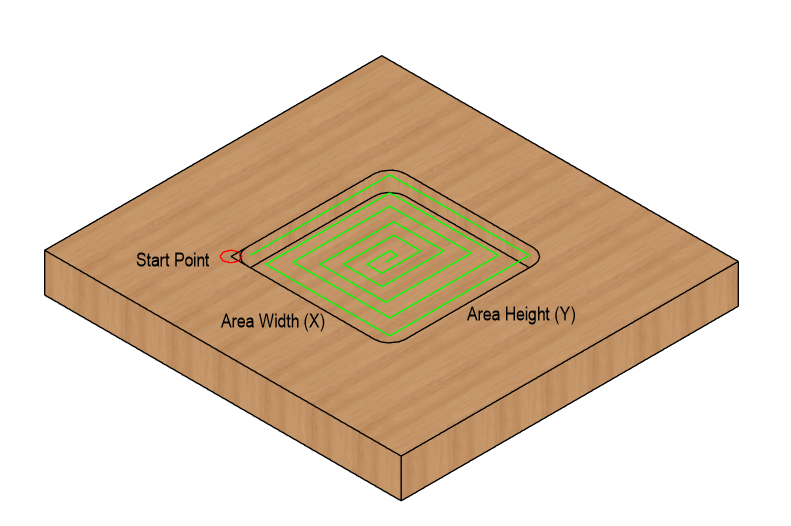
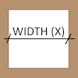
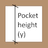
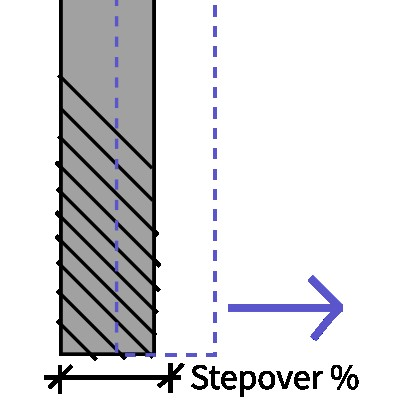

GRBL Square Pocket G-Code Generator
Generates G-Code for a rectangular pocket using an inward spiral toolpath. The tool remains entirely within the defined boundary.
3D Toolpath Preview
The path will appear once you press the generate button.
Order of operations:
- Zero the machine at the pocket corner.
- Tool will lift up and travel into the patch area.
- Tool will plunge into the material and cut inside perimeter.
- Once finishes it will lift up and travel to start position at safe height.
Input Parameters
|  | Pocket Width (X) defines the size of the pocket along the X-axis. This is the horizontal dimension in most standard CNC setups. |
|  | Pocket Height (Y) defines the size of the pocket along the Y-axis. This is the vertical dimension of the cut area. |
 |
Total Depth (Z) is the final, negative Z-coordinate the tool will reach. This defines how deep the pocket will be. |
 |
Tool Diameter is the width of the end mill used for cutting. The pocket size calculation depends heavily on this value. |
|  | Stepover is the distance of the overlap with the next cutting pass, expressed as a percentage of the Tool Diameter. |
 |
Stepdown (Z) is the maximum depth the tool will cut in a single pass before retracting to start the next layer. |
 |
Feed Rate (XY) is the speed at which the tool moves horizontally during cutting operations. Use a lower rate for harder materials. |
 |
Plunge Rate (Z) is the speed at which the tool moves vertically (down) when entering the material for a new cutting layer. |
 |
Safety Z Height is a clear height above the material that the tool uses when moving between non-cutting operations. |
-
Raw G-Code Preview